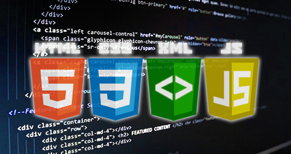
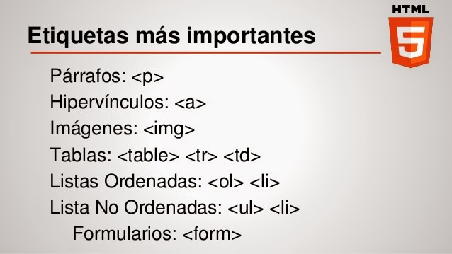

INSTITUTO TECNOLÓGICO DE LA ZONA OLMECA
Programación Web
UNIDAD 2. HTML, XML Y CSS
2.1.- Introducción
HTML5 provee básicamente tres características: estructura, estilo y funcionalidad. Nunca
fue declarado oficialmente pero, incluso cuando algunas APIs (Interface de Programación
de Aplicaciones) y la especificación de CSS3 por completo no son parte del mismo, HTML5
es considerado el producto de la combinación de HTML, CSS y Javascript. Estas tecnologías
son altamente dependientes y actúan como una sola unidad organizada bajo la
especificación de HTML5. HTML está a cargo de la estructura, CSS presenta esa estructura
y su contenido en la pantalla y Javascript hace el resto que (como veremos más adelante)
es extremadamente significativo.
Más allá de esta integración, la estructura sigue siendo parte esencial de un
documento. La misma provee los elementos necesarios para ubicar contenido estático o
dinámico, y es también una plataforma básica para aplicaciones. Con la variedad de
dispositivos para acceder a Internet y la diversidad de interfaces disponibles para
interactuar con la web, un aspecto básico como la estructura se vuelve parte vital del
documento. Ahora la estructura debe proveer forma, organización y flexibilidad, y debe
ser tan fuerte como los fundamentos de un edificio.

Volver arriba
2.2.- Estructura global de un documento web
Los documentos HTML se encuentran estrictamente organizados. Cada parte del
documento está diferenciada, declarada y determinada por etiquetas específicas. En esta
parte del capítulo vamos a ver cómo construir la estructura global de un documento HTML
y los nuevos elementos semánticos incorporados en HTML5.

Volver arriba
2.3.- Elementos básicos: texto, vínculos, listas, tablas, objetos, imágenes y aplicaciones
Las principales características que constituyen una página en Internet son:
Texto.
El texto es el elemento más significativo de cualquier sitio Web porque los usuarios navegan por la Web fundamentalmente
en busca de información expresada en hipertexto.
NOTA:
Los textos han convertido el inglés en el idioma universal de la red. En su objetivo por alcanzar la mayor audiencia posible,
muchos sitios ofrecen su información y sus servicios en su idioma natal y en otros idiomas, fundamentalmente en inglés.
Imágenes
Aunque no debe abusar de las imágenes por el riesgo de aumentar el peso de la página, y por lo tanto,
los tiempos de descarga. Las imágenes constituyen un elemento esencial para ofrecer información visual del contenido
y mostrar un diseño atractivo y personal.
Hipervínculos
Enlaces, hivervínculos en HTML
Por sí misma, una página Web no puede hacer mucho. La magia de verdad comienza cuando relaciona varias página mediante enlaces.
Tablas
Las tablas están incluidas en HTML desde sus primeras versiones y son una forma fantástica de mostrar datos claramente.
Además, si las construimos de forma semántica y correctamente, es muy sencillo darle estilos desde CSS
y cambiar su diseño con unas cuantas propiedades CSS, puesto que mediante las etiquetas que la componen se puede
hacer referencia a cada parte de la misma.
Listas
En HTML existen tres tipos de listas. ol muestra una lista ordenada mientras que ul muestra una lista no ordenada, y para realizar una lista de definiciones, la etiqueta usaremos dl. Usa los atributos type y start para hacer una lista según tus necesidades.
- ul - lista sin clasificar, bullets (puntos).
- ol - listas ordenadas, números.
- dl - lista de definiciones.
Video
Víodeo en Sitio Web
Mientras Internet es cada vez más asequible, confiable y veloz, los programas de edición de video se hacen más cercanos a los usuarios.
Ahora es más fácil realizar un video desde una cámara digital o un teléfono móvil con cámara incorporada y que termine subiendo a la Web para ponerlo al alcance de todos.
Animaciones
Animación Web con reproductos Flash Player
Es una imagen animada, fácil de crear y sobre todo que ocupa poca memoria. Tiene diferentes usos, desde la creación de dibujos animados hasta el despliegue de dibujos interactivos.
Sonidos
Sonido en páginas Web
Un elemento cada vez más importante. La comercialización de nuevos dispositivos digitales móviles como el iPhone ha potencializado este elemento.
Además de incorporar sonido en la página Web puede descargar de ellas archivos de audio para sus dispositivos móviles.
El formato MP3 es el más conocido y más usado por su calidad y nivel de compresión.

Volver arriba